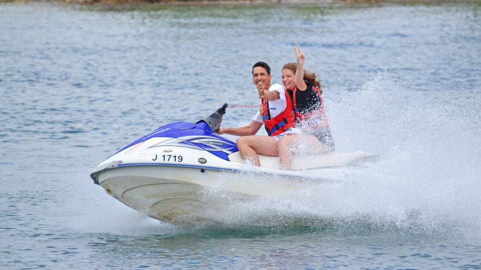

A Jet Ski a Kawasaki japán cég által gyártott személyi vízi jármű (PWC) márkaneve. A kifejezést gyakran használják általánosan bármilyen típusú, elsősorban rekreációs célú vízi jármű megjelölésére, és igeként is használják bármilyen típusú PWC használatának leírására. A kifutó stílusú PWC általában 3 embert szállít, olyan konfigurációban, mint egy tipikus kerékpár vagy motor.
